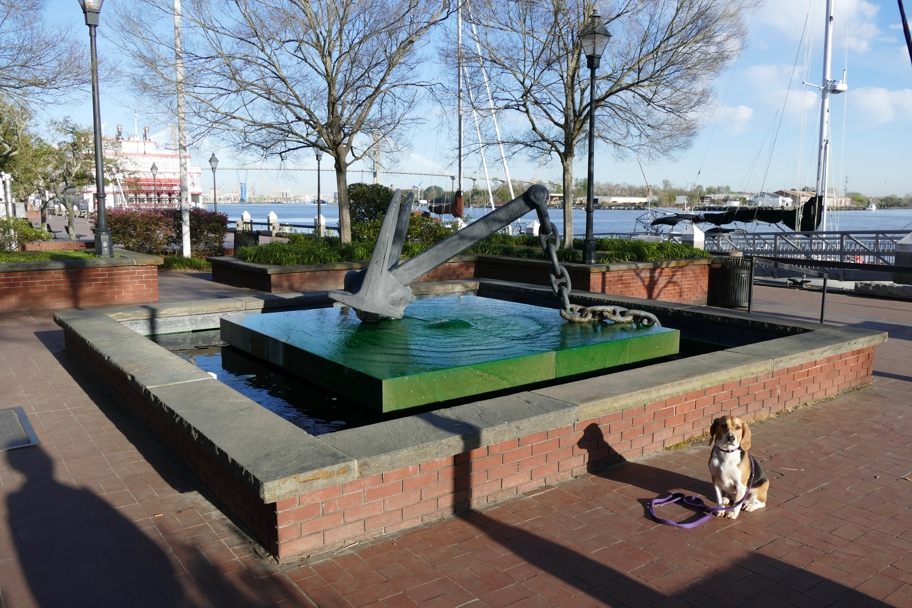

The night before, our bartender had explained that St. Patrick's Day, still five days away, was a big holiday in Savannah. Many businesses were already decorated, and all of the fountains that we saw were already dyed green in preparation.
Georgia Halley Beagle Savannah